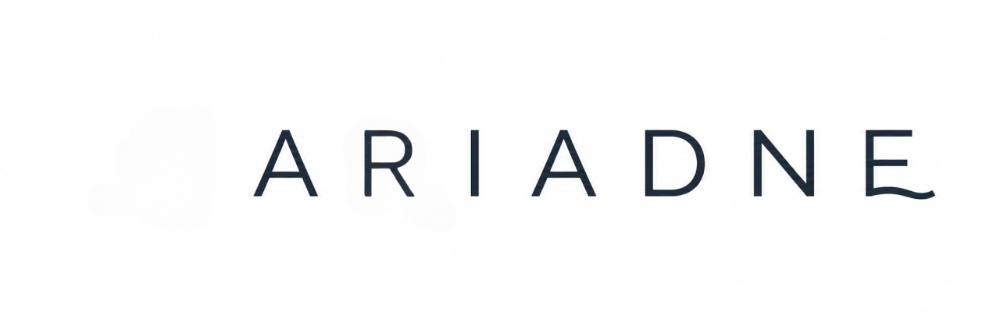

LPD's · Surma-bouwstenen · Leerstof · Hiaten
Ariadne verzamelt lesmetadata, koppelt elke les aan de juiste LPD-set, toont waar Surma-bouwstenen voorkomen en genereert overzicht en inzicht.
Vervang later de voorbeelddata door echte lessen en officiële leerplandoelen.
Kernfuncties
Van lesmetadata tot hiatencheck — Ariadne geeft je het overzicht dat je nodig hebt als leraar.
Koppel elke les aan de juiste leerplandoelstellingen. Zie onmiddellijk welke LPD's voldoende of te weinig aan bod komen.
De 12 didactische bouwblokken van Surma's Wijze Lessen worden automatisch herkend en overzichtelijk weergegeven.
Welke auteurs, teksten en begrippen komen aan bod? Ariadne bouwt een gestructureerd overzicht van je leerstof.
Welke LPD's of bouwstenen komen nooit voor? Ariadne signaleert lacunes zodat je gericht kunt bijsturen.
Upload een digitale PDF en Ariadne scant de tekst op mogelijke LPD's en bouwstenen. Suggesties blijven bewust suggesties.
Exporteer je curriculum als JSON, CSV of planner-CSV. Klaar om te delen met collega's of te importeren in andere tools.
Werkwijze
Ariadne werkt met handmatig bevestigde metadata. Jij blijft de bron van waarheid.
Voeg lesmetadata toe als JSON — auteur, thema, LPD's, bouwstenen en meer.
Filter op site, richting, thema of bouwsteen. Zoek snel op trefwoord.
LPD-dekking, bouwsteenverdeling, leerstof en hiaten — alles in één dashboard.
Corrigeer lacunes, bevestig suggesties en exporteer je curriculum.
PDF-scan
Ariadne leest de tekst lokaal in je browser en herkent mogelijke LPD- en bouwstenenkoppelingen. Suggesties zijn nooit automatisch definitief — jij bevestigt of corrigeert ze.
Sleep je PDF hierheen of kies een bestand
Kies PDF-bestandMax. 50 MB · PDF met digitale tekst
Pagina 1 — mogelijke koppelingen
LAT3-LPD01 LAT3-LPD04 voorkennis-activeren directe instructie verwerkingWijze Lessen
Ariadne herkent alle bouwstenen uit Surma's didactisch kader en toont hun verdeling over je lessen.
01
02
03
04
05
06
07
08
09
10
11
12
Open het dashboard en laad je eerste lesmetadata in.